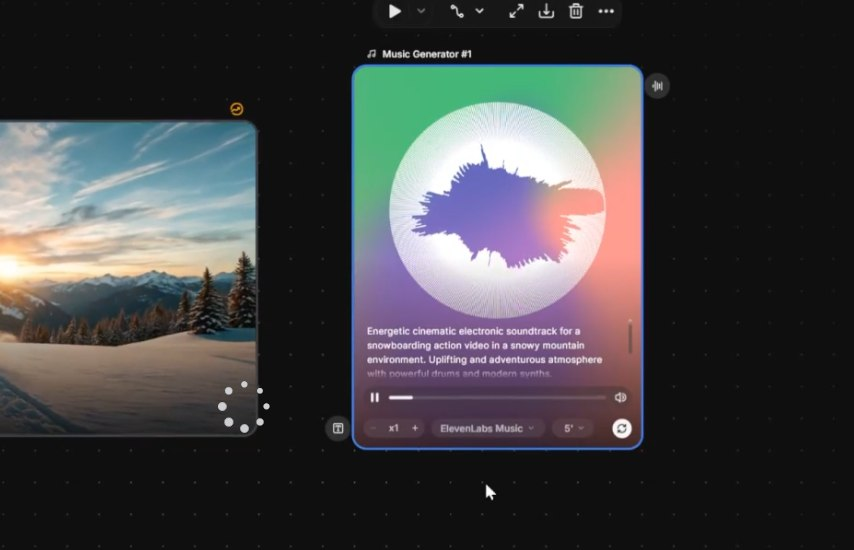
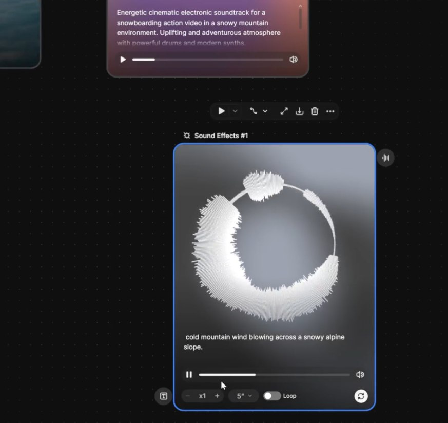

🎙️ Voiceover Node
O Voiceover Node gera narração a partir de texto. Cole o trecho do seu roteiro, escolha a voz, idioma e tom — o resultado pode ser usado como narração over, voz de personagem ou guia para lip sync.
🎙️ Parâmetros Essenciais
- •Texto: trecho exato do roteiro, com pontuação respiratória
- •Voz: escolha tipo (masculina, feminina, jovem, adulta, idosa)
- •Idioma: português, inglês, espanhol — combine com o tom desejado
- •Tom: calmo, dramático, urgente, melancólico

Voiceover Node no Spaces — colar texto, escolher voz, gerar narração em segundos
🎵 Music Node
A trilha sonora é a coluna emocional do filme. O Music Node gera música original sob demanda — descreva gênero, BPM, mood e duração para alinhar com a duração do seu filme.
Parâmetros
- • Gênero: ambient, orquestral, eletrônico, lo-fi
- • BPM: 60-80 (lento), 90-110 (médio), 120+ (rápido)
- • Duração: alinhe com a duração do filme
- • Mood: melancólico, esperançoso, tenso, épico
Boas Práticas
- • Gere com 5-10s a mais para ter margem de fade
- • Crie 2-3 versões e escolha a que melhor casa
- • Evite trilhas com vocal se houver voiceover
- • Use mood matching: música ≈ emoção da cena

Music Node gerando trilha sonora original — gênero, BPM e duração configurados conforme o filme exige
🔊 SFX Node
Efeitos sonoros (SFX) trazem o filme à vida. Sons diegéticos — chuva, vento, passos, cidade, portas — fazem o espectador sentir que aquilo é real. Sem SFX, mesmo a melhor imagem fica vazia.
Ambiente
Chuva, vento, oceano, floresta, cidade. São as camadas de fundo que estabelecem o "onde" sonoro da cena.
Foley
Passos, roupas, objetos sendo manipulados. São os sons "de gente" que dão presença física aos personagens.
Pontuais
Porta batendo, vidro quebrando, telefone tocando. Sincronizados com a ação na imagem.

SFX Node — gerando efeitos sonoros descritos por texto, prontos para colocar como camadas no mixer
🎚️ Audio Mixer Node
O Audio Mixer Node é onde os 3 tracks (voz, música, SFX) se encontram com o vídeo. Aqui você balanceia volumes, alinha tempos e exporta o áudio final mixado pronto para o filme.
🎚️ Inputs do Mixer
- 1.Track de voz (Voiceover Node) — sempre dominante
- 2.Track de música (Music Node) — atmosférica, abaixo da voz
- 3.Track de SFX (SFX Node, múltiplos) — pontuais
- 4.Vídeo base — recebe o áudio mixado como output final

Audio Mixer Node recebendo voz, música e SFX — saída única pronta para o vídeo final
🎯 Pipeline de Áudio no Canvas
Um Spaces organizado é um Spaces produtivo. A convenção visual para áudio é: voz no topo, música no meio, SFX em baixo. Isso espelha a hierarquia de importância sonora no cinema.
[Voiceover Node] ────┐
│
[Music Node] ─────┼──→ [Audio Mixer] ──→ [Final Video]
│
[SFX Node 1] ─────┤
[SFX Node 2] ─────┘
💡 Dica de Organização
Agrupe todos os nodes de áudio do lado esquerdo do canvas, com cores distintas (use o color picker do Spaces). Isso facilita o reuso do pipeline em outros filmes — basta duplicar o grupo.

Canvas Spaces com pipeline completo de áudio organizado — fluxo limpo da geração até o vídeo final
⚖️ Níveis e Mistura
A mistura final segue regras simples mas inegociáveis. A voz nunca pode ser abafada. A música nunca pode competir com a voz. O SFX precisa ter presença sem dominar.
Voz: 0 dB
Nível de referência. A voz é o pico — todos os outros tracks se medem por ela.
Música: -12 a -18 dB
Atmosférica. Quando há voz, abaixe ainda mais (-20 dB). Sobe nos momentos sem voz.
SFX: -6 a -10 dB
Presente mas pontual. Foley sutil, ambiente baixo, efeitos pontuais um pouco mais altos.
⚠️ O Erro Mais Comum
Iniciantes mantêm música no mesmo nível da voz "porque a música está bonita". Resultado: o espectador não entende uma palavra. Música nunca compete com voz — sempre cede espaço.
✅ Resumo do Módulo 6.7
Próximo Módulo:
6.8 — Lip Sync (opcional): sincronização labial para personagens que falam diretamente com a câmera.